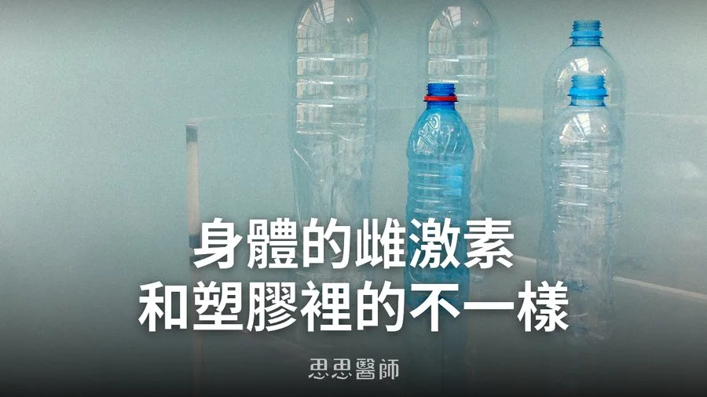

身體的雌激素，和塑膠裡的不一樣

為了徹底了解天然雌激素和環境雌激素對身體的影響，我最近找了一本書來看，叫做《Estrogeneration》，這是一本 2017 年關於雌激素的書籍。作者是安東尼‧傑伊博士（Anthony G. Jay, Ph.D.），在波士頓大學拿到生物化學博士。他把所有會冒充雌激素的化學物質統稱為「類雌激素（Estrogenics）」，書名則是他自己造的字，意思是「被雌激素泡大的一代」。這本書的起點很個人：他搬到波士頓讀博士之後，開始出現過敏、睪固酮下降，才一路追到每天接觸的塑膠、防曬乳和飲用水。書裡我最想拿出來講的一段，是他把人體自己做的雌激素和環境裡的人工雌激素放在一起比。兩者都能和細胞上的雌激素受體（Estrogen Receptor）結合，乍看好像是同一回事，但進到身體之後，結局完全不同。
先從來源講起。天然雌激素是身體用膽固醇一步一步精準轉化出來的，主要有三種：雌酮（E1）、雌二醇（E2）和雌三醇（E3）。它們和睪固酮一樣屬於類固醇荷爾蒙（Steroid Hormones），什麼時候分泌、分泌多少、多久之後關掉，都有一整套回饋系統在管。人工雌激素就不是這樣了，它的成員包括塑膠原料 BPA、BPS，塑化劑鄰苯二甲酸酯（Phthalates），化學防曬成分 BP、4-MBC，除草劑阿特拉津（Atrazine），防腐劑對羥基苯甲酸酯（Parabens），還有避孕藥裡的合成雌激素 EE2。這些分子本來就不是為了當荷爾蒙而存在，只是結構剛好能「黏」在雌激素受體上，結果就是冒用身分，傳出錯誤的訊號。
再來是劑量。天然雌激素的濃度低到要用微微克（pg/mL）來算，成年男性大約只有 20 pg/mL，育齡女性隨著月經週期起伏，也大約落在 20 到 400 pg/mL 之間。這麼一點點的量，就足以指揮全身的細胞。但我們從食物、飲水和日用品接觸到的人工雌激素，數量級完全不同，作者舉的例子是未經處理的水源，阿特拉津可以測到每公升數千到數萬奈克（ng/L）。單一個人工分子的力氣通常比雌二醇弱很多，可是數量一多、每天不間斷地進來，身體那套精細的回饋系統就很難招架。
更麻煩的是清不掉。天然雌激素傳完訊號，肝臟會把它代謝掉，訊號有開就有關。人工雌激素有好幾種是刻意設計成抗分解的，像 EE2 為了讓避孕藥效果持久，本身就很難被代謝，作者引用的研究裡，EE2 放在地下水環境 70 天，降解率幾乎是零。BPA 這類物質還會在受體上和天然雌激素搶位置，把真正的荷爾蒙擠開。書裡最讓我印象深刻的是防曬成分 4-MBC 和 BP，作者提到它們黏上受體之後，如果再照到紫外線（UV），有可能把受體卡死在開啟狀態，就像收音機的開關被弄壞，聲音一直開著，關不掉。
對大腦和老化的影響，兩邊也是反方向走。天然雌激素本身有一點保護大腦、延緩老化的作用，在更年期女性的研究裡，可以改善情緒和主觀幸福感，這也是為什麼很多女性停經前後，會明顯覺得心情變得比較難穩住。人工雌激素則會干擾神經迴路，雙酚類和塑化劑和成人、老年人的憂鬱症有明顯關聯，動物實驗裡 BPA 和 Parabens 甚至會縮短壽命。它佔了天然雌激素的位置，卻做不到天然雌激素該做的事，等於是在幫身體加速老化。
我覺得這本書最該被台灣讀者看到的，是人工雌激素和脂肪的關係。人類演化過程中從來沒有接觸過這些實驗室做出來的分子，所以身體沒有預警系統，皮膚不會發炎，舌頭也嚐不到苦味或怪味，它們可以安安靜靜地穿過皮膚被吸收。這些分子又是親脂性（Lipophilic）的，進來之後會躲進脂肪細胞，而一個脂肪細胞可以活 1.5 到 10 年，等於在身體裡蓋了一座長期倉庫，慢慢釋放。更糟的是，人工雌激素還會啟動脂肪生成的總開關 PPARγ，讓脂肪細胞增生，進一步推高胰島素阻抗（Insulin Resistance）。脂肪越多，倉庫越大，存進去的人工雌激素就越多，這是一個會自己加柴的循環。我在門診看到很多人飲食和運動都做了，體重和血糖卻還是卡住，回頭看他的生活環境，常常有很多這類暴露。
有一點我和作者的看法不太一樣。書裡把植物雌激素（Phytoestrogens），也就是大豆裡的異黃酮（Isoflavones），和塑化劑、除草劑放在同一張黑名單上。我不同意這樣做。植物雌激素跟人工化學物不一樣，它會被腸道菌分解，東亞人吃傳統豆製品也已經吃了很久。我比較建議的是選納豆、味噌、天貝這類發酵的形式，腸胃比較敏感的人再減量就好，沒有必要把豆腐和 BPA 當成同一種敵人。
那日常可以怎麼做？我會建議從最容易改的地方開始：
1. 少用塑膠容器裝熱食、微波，改用玻璃、陶瓷或不鏽鋼；外帶熱湯也盡量不要直接倒在塑膠袋裡。「BPA free」不代表沒事，替代品 BPS、BPF 的影響不一定比較小。
2. 防曬先靠衣服，出門多穿長袖、戴帽子、撐傘；要擦防曬乳的話，盡量挑以氧化鋅（Zinc Oxide）為主的產品。
3. 飲用水加裝過濾，同時把體脂肪降下來，脂肪少了，人工雌激素可以藏身的倉庫就跟著變小。
4. 多去桑拿或汗蒸，囤在脂肪裡的人工雌激素，流汗是很實際的出口。從 10 到 15 分鐘開始，前後補足水分；有心血管疾病或懷孕的人先問過醫師。
這些物質要合理避開，但不需要因此過度焦慮，你不可能活在一個完全沒有塑膠的世界。真正要記住的是，身體的雌激素是一套有開有關的訊號，環境雌激素卻是一個關不掉的雜音，把雜音調小，身體自己的訊號才聽得清楚。
參考資料
1. Estrogeneration: How Estrogenics Are Making You Fat, Sick, and Infertile（Anthony G. Jay, Pyrimidine Publishing, 2017）
（本文由我規劃架構與觀點，並協同 AI 校正與潤飾語句）
 空腹小雞跟思思醫師一起斷食，順便養一隻小雞來養小雞 →
空腹小雞跟思思醫師一起斷食，順便養一隻小雞來養小雞 →
好朋友早餐信
一週一封：《健康駭客週報》這集的研究重點，加上家醫專欄這週的新文章。免費，隨時可以退訂。